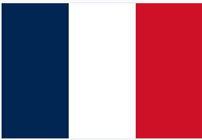

Caricamento dell'applicazione in corso...

Bienvenido
Ex Fabrica de Tabaco
Los Pintores Carracci
Central hidroelectrica de Cavaticcio
Basílica San María Mayor
Placa votiva de Grazia
Las Pugliole
Casa de Ludovico Carracci
Números de casas en losas de arenisca
Iglesia de San Benedetto
Santuario de la Lluvia
Paisaje con San Bartolomé Alfonso Lombardi
Escultura de San Bartolomé Ludovico Mattioli
La Adoración de los Pastores Agostino Carracci
Iglesia San Carlo Borromeo al Porto
Edificio de madera Vandini
Santuario votivo con la Virgen y el Niño
Ascolta